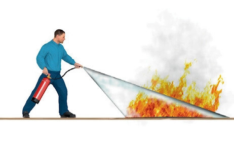
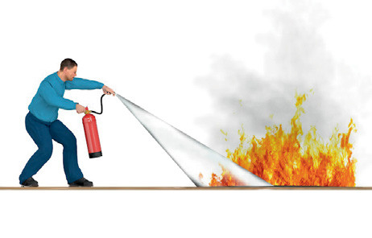
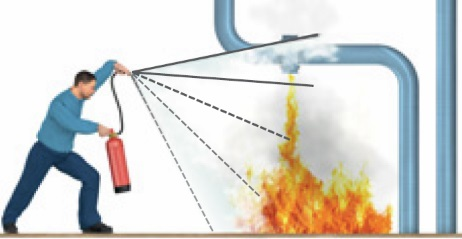
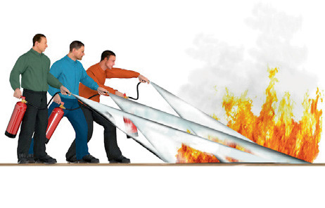
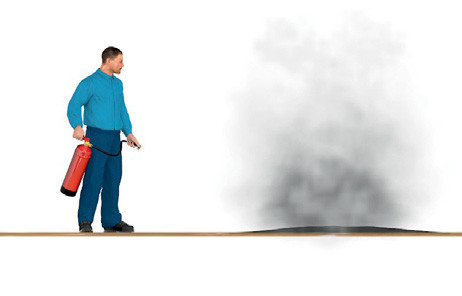
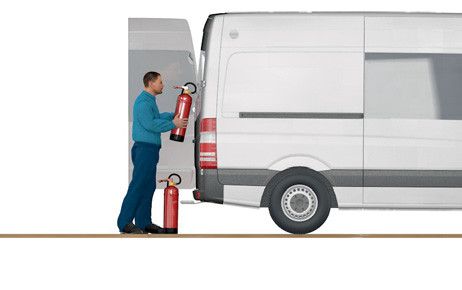
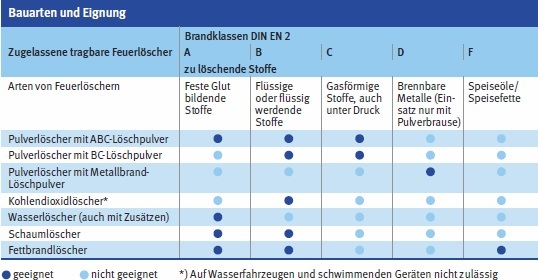

Gefährdungen
- Es kann zu Bränden und
Explosionen kommen.
Schutzmaßnahmen
Vorbeugender Brandschutz
- An oder in der Nähe von
Arbeitsplätzen leichtentzündbare und extrem entzündbare,
brandfördernde oder selbstentzündliche Stoffe nur in einer
Menge lagern, die für den Fortgang
der Arbeiten erforderlich
ist.
- Feuerlöscheinrichtungen bereithalten.
- Auf Baustellen für jede Arbeit
mit Brandgefährdung pro eingesetztes Arbeitsmittel einen
Feuerlöscher entsprechender
Brandklasse mit mindestens
6 LE bereithalten.
- Auf Baustellen mit besonderen
Gefährdungen (z. B. Untertagebaustellen,
Hochhausbau)
weitere Feuerlöscher oder Löschanlagen
vorsehen.
- Feuerlöscher nach Herstellerangaben
und unter Berücksichtigung der Einsatzbedingungen prüfen lassen, in der Regel alle zwei Jahre.
- Hinweisschilder für Feuerlöscheinrichtungen
anbringen und
beachten. Feuer- und explosionsgefährdete
Bereiche durch Aufstellen
von Hinweisschildern
kennzeichnen.
- Alle Mitarbeiter in der Bedienung
der Feuerlöscher unterweisen. Diese Unterweisung
regelmäßig wiederholen.
- Für den Brandfall Alarmplan
aufstellen und beachten.
- Fluchtwege kennzeichnen und
freihalten.
- Zufahrten für die Feuerwehr
freihalten.
Im Falle eines Brandes
- Brand mit genauen Angaben
über die Brandstelle der Feuerwehr
melden.
- Sofern Menschen in Gefahr
sind, diesen helfen oder Hilfe
herbeiholen.
- Menschen mit brennenden
Kleidern dürfen nicht laufen.
- Brennende Personen immer nur
mit einem Feuerlöscher löschen.
Dabei nicht aufs Gesicht zielen
und einen Abstand von mindestens
2–3 Meter einhalten. Keine
Löschdecken einsetzen.
- Auf die Eigensicherung achten.
- Rückweg sichern.
- Türen bzw. Fenster schließen,
um Zugluft zu vermeiden.
- Entstehungsbrand sofort mit Feuerlöscheinrichtung bekämpfen.
- Beim Einsatz von Feuerlöschern
Sicherheitsabstände zu elektrischen Anlagen bis 1000 Volt
einhalten:
Wasserlöscher
(Vollstrahl) |
3,0 m |
| Schaumlöscher |
3,0 m |
| Wasserlöscher
(Sprühstrahl) |
1,0 m |
| Pulverlöscher |
1,0 m |
| Kohlendioxidlöscher |
1,0 m |
Richtig löschen

Feuer in Windrichtung angreifen

Flächenbrände vorn beginnend ablöschen

Aber: Tropf- und Fließbrände von oben nach unten löschen

Genügend Löscher auf einmal einsetzen – nicht nacheinander

Vorsicht vor Wiederentzündung

Eingesetzte Feuerlöscher nicht mehr aufhängen. Feuerlöscher neu füllen lassen

| Löschmitteleinheiten in Abhängigkeit von der Grundfläche
der Arbeitsstätte, auch für stationäre Baustelleneinrichtungen, z. B: Baubüros, Unterkünfte, Werkstätten |
| Grundfläche bis … m2 |
Löschmitteleinheiten [LE] |
| 50 |
6 |
| 100 |
9 |
| 200 |
12 |
| 300 |
15 |
| 400 |
18 |
| 500 |
21 |
| 600 |
24 |
| 700 |
27 |
| 800 |
30 |
| 900 |
33 |
| 1000 |
36 |
| je weitere 250 |
+ 6 |
Für die Grundausstattung dürfen nur Feuerlöscher angerechnet werden, die
jeweils über mindestens 6 Löschmitteleinheiten (LE) verfügen.
Werkstätten mit erhöhter Brandgefährdung, z. B. Kfz-Werkstatt, Tischlerei,
Metallverarbeitung, Elektrowerkstatt, mit weiteren Feuerlöschern oder
Löschanlagen ausstatten, Brandmeldeanlagen vorsehen.
07/2021